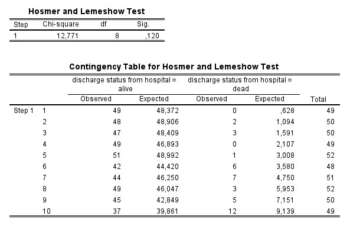
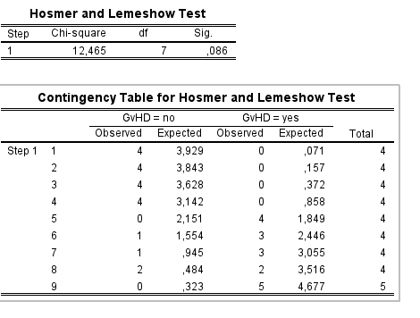

alive dead
male 282 18
female 179 21
alive dead
male 0.940 0.060
female 0.895 0.105In part 1 of the lab, we are going to continue analyzing the Worcester Heart Attack Study (WHAS) dataset (file whas500.sav on Brightspace). The outcome of interest for today’s analysis is in-hospital death, measured by the variable “discharge status from hospital” (dstat) with values alive and death.
alive dead
male 282 18
female 179 21
alive dead
male 0.940 0.060
female 0.895 0.105Based on the group proportions, do you expect gender to have an effect on the risk of in-hospital death?
The proportion of in-hospital deaths is higher among females (0.105) than among females (0.06). This suggests that gender might be associated with the risk of in-hospital death.
Perform the chi-square test of homogeneity (see instructions in lab 4 if needed). What conclusion can be drawn from the test?
Pearson's Chi-squared test
data: contingencyTable
X-squared = 3.3789, df = 1, p-value = 0.06603The p-value of the chi-square test (0.066) is larger than 0.05, indicating that there is no significant association between gender and in-hospital death.
Call:
glm(formula = dstat_numeric ~ gender, family = binomial, data = whas500)
Coefficients:
Estimate Std. Error z value Pr(>|z|)
(Intercept) -2.7515 0.2431 -11.318 <2e-16 ***
genderfemale 0.6087 0.3351 1.816 0.0693 .
---
Signif. codes: 0 '***' 0.001 '**' 0.01 '*' 0.05 '.' 0.1 ' ' 1
(Dispersion parameter for binomial family taken to be 1)
Null deviance: 273.86 on 499 degrees of freedom
Residual deviance: 270.55 on 498 degrees of freedom
AIC: 274.55
Number of Fisher Scoring iterations: 5What is the odds ratio for in-hospital death for females compared to males? How should this odds ratio be interpreted in the context of the study?
The odds ratio for in-hospital death for females compared to males is equal to \(\exp(0.6087) = 1.83\). This means that the odds of in-hospital death are 1.83 times higher in females than in males.
Based on the estimated regression coefficients (ignoring p-values), what are the predicted proportions of in-hospital deaths for male and female patients? Compare the predicted proportions to the observed proportions from the previously constructed contingency table. Do they match?
The linear predictor models the risk of in-hospital death on the log-odds scale. To obtain the predicted probabilities, we need to transform the log-odds back to the probability scale using the logistic function.
The predicted probabilities of in-hospital death on the log-odds scale are:
The predicted probabilities on the probability scale are:
The predicted proportions of in-hospital deaths match the observed proportions from the contingency table.
What conclusion can be drawn from the logistic regression analysis regarding the association between gender and in-hospital death? Is this in line with the conclusion drawn from the chi-square test?
The p-value of the Wald test for the regression coefficient of the dummy variable genderfemale is 0.069, which is larger than 0.05. This indicates that there is no significant association between gender and in-hospital death. This conclusion is consistent with the results of the chi-square test.
Call:
glm(formula = dstat_numeric ~ gender + age, family = binomial,
data = whas500)
Coefficients:
Estimate Std. Error z value Pr(>|z|)
(Intercept) -6.89600 1.19131 -5.789 7.1e-09 ***
genderfemale 0.26776 0.34618 0.773 0.439246
age 0.05770 0.01524 3.785 0.000154 ***
---
Signif. codes: 0 '***' 0.001 '**' 0.01 '*' 0.05 '.' 0.1 ' ' 1
(Dispersion parameter for binomial family taken to be 1)
Null deviance: 273.86 on 499 degrees of freedom
Residual deviance: 253.45 on 497 degrees of freedom
AIC: 259.45
Number of Fisher Scoring iterations: 6How does adjusting for age affect the estimated odds ratio for in-hospital death for females compared to males?
After adjusting for age, the odds ratio for in-hospital death for females compared to males decreases from 1.83 to \(\exp(0.26776) = 1.31\). This indicates that the effect of gender on in-hospital death is confounded by age.
Calculate the odds ratio for in-hospital death corresponding to a 10-year increase in age and interpret its meaning.
The increase in the risk of in-hospital death on the log-odds scale is equal to 0.0577 * 10 = 0.577. This means that for every 10-year increase in age, the odds of in-hospital death increase by a factor of \(\exp(0.577) = 1.78\).
Analysis of Deviance Table
Model 1: dstat_numeric ~ age
Model 2: dstat_numeric ~ gender + age
Resid. Df Resid. Dev Df Deviance Pr(>Chi)
1 498 254.05
2 497 253.45 1 0.59934 0.4388How does the p-value from the likelihood ratio test compare to the one from the Wald test?
The p-value of the likelihood ratio test (0.4388) is approximately equal to the p-value of the Wald test (0.4392). This indicates that the results of the two tests are consistent, which is expected because, for testing the significance of a single coefficient, the Wald test and the likelihood ratio test often yield similar results. However, they are not strictly equivalent, as the likelihood ratio test is based on comparing model fit, while the Wald test assesses the coefficient’s deviation from zero using its standard error.
Groups for Hosmer-Lemeshow C statistic:
cutfit
[0.00568,0.0178] (0.0178,0.0279] (0.0279,0.0369] (0.0369,0.0514]
55 52 47 52
(0.0514,0.065] (0.065,0.0864] (0.0864,0.103] (0.103,0.126]
44 53 55 43
(0.126,0.154] (0.154,0.348]
50 49
Groups for Hosmer-Lemeshow H statistic:
cutfit1
[0.00534,0.0399] (0.0399,0.0742] (0.0742,0.108] (0.108,0.143]
164 110 87 61
(0.143,0.177] (0.177,0.211] (0.211,0.245] (0.245,0.28]
54 19 2 2
(0.28,0.314] (0.314,0.348]
0 1 $C
Hosmer-Lemeshow C statistic
data: fitted(model.sex.age) and model.sex.age$y
X-squared = 11.465, df = 8, p-value = 0.1767
$H
Hosmer-Lemeshow H statistic
data: fitted(model.sex.age) and model.sex.age$y
X-squared = 6.2434, df = 8, p-value = 0.62
Based on the results of the Hosmer-Lemeshow goodness-of-fit test, does our model provide a satisfactory fit to the data?
The p-value for the Hosmer-Lemeshow test is 0.177 in R (C statistic) and 0.120 in SPSS, indicating that the model provides a satisfactory fit to the data: a non-significant p-value suggests that the model fits the data well, meaning that the observed and expected frequencies do not differ significantly.
Note: the discrepancy between the p-values from R and SPSS seems to be due to small differences in how the groups are created within the implementation of the test.
Multiple logistic regression was used to construct a prognostic index to predict coronary artery disease from data on 348 patients with valvular heart disease who had undergone routine coronary arteriography before valve replacement (Ramsdale et al. 1982). The estimated equation was:
\[logit(p) = ln(p/(1-p)) = b_{0} + 1.167 \times x{1} + 0.0106 \times x_{2} + \textrm{other terms}\]
where \(x_{1}\) stands for the family history of ischaemic disease (0=no, 1=yes) and \(x_{2}\) is the estimated total number of cigarettes ever smoked in terms of thousand cigarettes, calculated as the average number smoked annually times the number of years smoking.
Answers:
\(\exp(1.167) = 3.212\).
The log(OR) of positive history, \(1.167\), is to be set equal to \(0.0106 \times x_2\), where \(0.0106\) is the log odds ratio of smoking 1000 cigarettes. Thus \(x_2=1.167/0.0106=110.094\) thousands of cigarettes. Dividing this result by \((365 \times 20) / 1000 = 7.3\), i.e., the total number cigarettes (per thousand) smoked in 1 year if smoking 20 cigarettes per day, we find \(110.094/7.3=15.1\) or just above 15 years. Thus the odds ratio of positive history is equivalent to that of daily smoking of 20 cigarettes for about 15 years.
The total number of cigarettes smoked (per thousand) is \((20 \times 365 \times 30) / 1000 = 219\), so the odds ratio is \(\exp(1.167 + 219 \times 0.0106) = 32.7\)
Data from 37 patients receiving a non-depleted allogenic bone marrow transplant were examined to see which variables were associated with the occurrence of acute graft-versus-host disease (GvHD: 0=no, 1=yes) (Bagot et al., 1988). Possible predictors are TYPE (type of leukemia: 1=AML, acute myeloid leukaemia; 2=ALL, acute lymphocytic leukaemia; 3=CML, chronic myeloid leukemia), PREG (donor pregnancy: 0= no, 1=yes), and LOGIND (the logarithm of an index of mixed epidermal cell-lymphocyte reactions). The data are in the file GvHD.sav available on Brightspace.
Answers:
# Create a 0/1 numeric version of the outcome variable
GvHD$gvhd.numeric <- ifelse(GvHD$gvhd == "no", 0, 1)
# Fit the full model
model.GvHD <- glm(gvhd.numeric ~ type + preg + logind, family = binomial, data = GvHD)
summary(model.GvHD)
Call:
glm(formula = gvhd.numeric ~ type + preg + logind, family = binomial,
data = GvHD)
Coefficients:
Estimate Std. Error z value Pr(>|z|)
(Intercept) -2.4496 1.2113 -2.022 0.0431 *
typeALL -0.1480 1.1722 -0.126 0.8996
typeCML 2.1781 1.2420 1.754 0.0795 .
pregyes 2.4982 1.1026 2.266 0.0235 *
logind 1.4577 0.7547 1.932 0.0534 .
---
Signif. codes: 0 '***' 0.001 '**' 0.01 '*' 0.05 '.' 0.1 ' ' 1
(Dispersion parameter for binomial family taken to be 1)
Null deviance: 51.049 on 36 degrees of freedom
Residual deviance: 28.832 on 32 degrees of freedom
AIC: 38.832
Number of Fisher Scoring iterations: 5# Fit the reduced model
model.GvHD.reduced <- glm(gvhd.numeric ~ preg + logind, family = binomial, data = GvHD)
# Perform likelihood ratio test
anova(model.GvHD.reduced, model.GvHD, test = "LRT")Analysis of Deviance Table
Model 1: gvhd.numeric ~ preg + logind
Model 2: gvhd.numeric ~ type + preg + logind
Resid. Df Resid. Dev Df Deviance Pr(>Chi)
1 34 33.654
2 32 28.832 2 4.822 0.08972 .
---
Signif. codes: 0 '***' 0.001 '**' 0.01 '*' 0.05 '.' 0.1 ' ' 1The p-value of the likelihood ratio test is 0.090, indicating that the type of leukemia is not significantly associated with the occurrence of GvHD after adjusting for donor pregnancy and the logarithm of an index of mixed epidermal cell-lymphocyte reactions.
By default, R and SPSS both use the first level of the factor (ALM) as the reference category. Therefore, the table with estimated regression coefficients is the same in both outputs. The estimated odds ratio for the occurrence of GvHD for patients with AML compared to those with ALL is \(\exp(-0.148) = 0.862\).
The Hosmer-Lemeshow test results are as follows:
Groups for Hosmer-Lemeshow C statistic:
cutfit
[0.0109,0.0254] (0.0254,0.0552] (0.0552,0.142] (0.142,0.237] (0.237,0.529]
4 4 3 4 4
(0.529,0.582] (0.582,0.756] (0.756,0.879] (0.879,0.891] (0.891,0.988]
3 4 3 4 4
Groups for Hosmer-Lemeshow H statistic:
cutfit1
[0.00994,0.109] (0.109,0.206] (0.206,0.304] (0.304,0.402] (0.402,0.5]
11 2 3 1 1
(0.5,0.597] (0.597,0.695] (0.695,0.793] (0.793,0.89] (0.89,0.989]
5 0 4 6 4 $C
Hosmer-Lemeshow C statistic
data: fitted(model.GvHD) and GvHD$gvhd.numeric
X-squared = 12.352, df = 8, p-value = 0.1362
$H
Hosmer-Lemeshow H statistic
data: fitted(model.GvHD) and GvHD$gvhd.numeric
X-squared = 14.907, df = 8, p-value = 0.06097
While R and SPSS produce different p-values, neither is significant. Therefore, the model provides a satisfactory fit to the data.